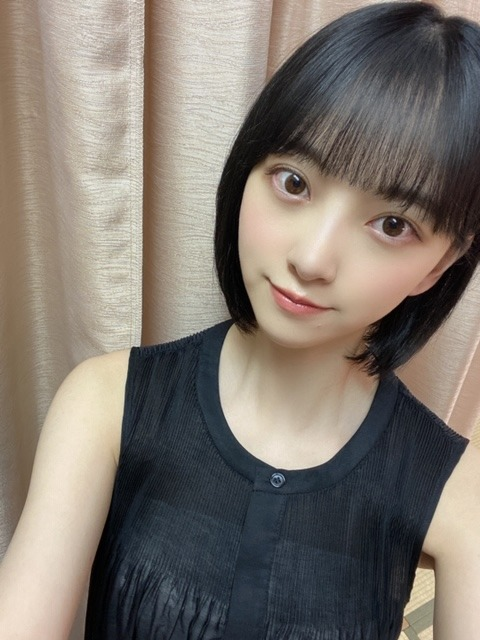
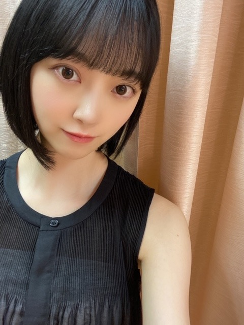
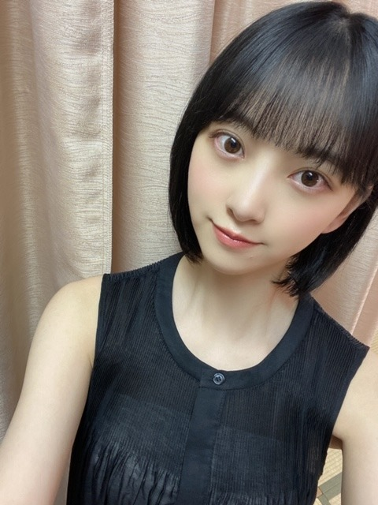
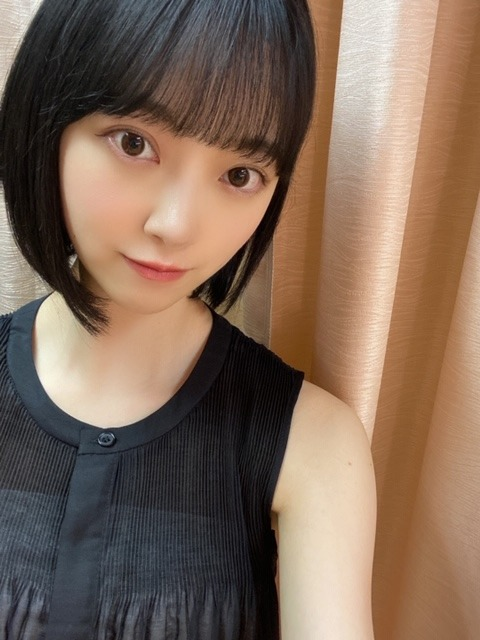

2020/0701Wed変わる不思議
7月ですね
nico touches the wallsさんの
夏の大三角形
がわたしの定番のナツウタです
夏かあ
今はまだ梅雨ですよね
雨の日は天気の子を観る決まりなのですが
天気の子を観過ぎてセリフ覚えてきました☺︎





昨日このワンピース着ていたら
絢音が似合うねって褒めてくれました
髪やメイクや服の少しの変化にも気付いてくれるので
嬉しいんですいつも。
朝ごはんは大好きなとうもろこしです
美味しいとうもろこしと桃を
この夏は追い求めたいとおもいます
では！☺︎
7月ですね
nico touches the wallsさんの
夏の大三角形
がわたしの定番のナツウタです
夏かあ
今はまだ梅雨ですよね
雨の日は天気の子を観る決まりなのですが
天気の子を観過ぎてセリフ覚えてきました☺︎


昨日このワンピース着ていたら
絢音が似合うねって褒めてくれました
髪やメイクや服の少しの変化にも気付いてくれるので
嬉しいんですいつも。
朝ごはんは大好きなとうもろこしです
美味しいとうもろこしと桃を
この夏は追い求めたいとおもいます
では！☺︎
2020/07/01 11:50


コメント(334)
可愛いすぎ❤️
髪短くしたね！
ボブが好きすぎる
え！俺もトウモロコシめちゃくちゃ好き
気付いたらもう7月か…。早い…。
早速｢夏の大三角形｣聴いてみました！めちゃんこいい！！
夏らしさ全開のエネルギッシュな歌にそれでいて夏の切なさも感じれる感じがしてホントにエモいです。MVも好きだー！
そしてこちらも夏らしさ全開の堀ちゃんのショート！！！
ロングも好きだしボブ？も好きだし全部好きだけどショートのこの爽やかさもホントに大好きー！！！
トウモロコシ、極めたいな☀︎
【今日の推し307】part12
p.65
･このポージング好き
･視線の外し方が上手い
･エモい
p.68~69、p.70~71
･この2ページ、ストーリー性あってめっちゃ好み！
p.69右上
･堀ちゃんのことだから重力の意義とその存在について考察してそう
･で、p.69右下の屈託ない笑顔でやられる
セリフ聞きたいなー笑笑
未央奈さんのショートめちゃくちゃ可愛くて似合い過ぎてます！
大好き！
nico touches the wallsさんの
夏の大三角形なんだ～？
角の数は三でもnicoなんだね～♪
当たり前のことを言わせて頂きます。
未央奈かわいい。
自分はショート派なので、特に今の髪形すきです。
ところで、濡れ烏。って知ってる？
髪色のことね。
未央奈さんに合うんじゃないかな～。
ジブリオタクさん、体調には、くれぐれも気をつけて。
では！
ひでき
ボブ未央奈かわいい！！！
下半期もがんばろー！
写真をみたら、ちょっとメイクが変わったのかな？
と思いました。
アイシャドー変えましたか？
気のせいかな？
でも、いつもかわいい堀ちゃんですよ！！
やっぱボブ未央奈も可愛いね〜、ずっと見てられる。笑
今年の夏はいつもより盛り上がらなそうだから何か面白いことを探していきたいです！
エクステ外したんだね！ロングもショートも似合うの本当に羨ましい！
黒髪ボブ可愛い⸜(*ˊᵕˋ*)⸝
ワンピースも大人っぽくて素敵！
朝からトウモロコシってすごい夏！って感じ。桃食べたくなってきた笑
最近また暑くなってきたから身体に気をつけてお仕事頑張ってね︎☺︎
４６時間テレビで言ってた時にイメージしたほど短くないし丁度めちゃくちゃ可愛いボブヘアーだよ！！←
(´∀｀*)ノ
ｂｙ通りすがりの他推し
黒髪ボブ似合って可愛いですね。
モバメとブログもありがとう！(゜▽゜*)
お、これはショート派のみなさん大喜びの予感ですね☆
当たり前だけど雰囲気がらっと変わるね！やっぱ髪の毛、髪型って大事だねー。
ニコタチとRADをそれぞれ聴いてたのかな？
未央奈って聴く音楽の幅広いよねー、洋楽やサントラも聴いてるしすごいね！( ・∇・)
この時期は梅雨～夏の間って感じでジメジメ蒸し暑いし、それで雨も降るしで結構大変だよね(；・∀・)
どうせなら、8月とかの夏！って暑さになってほしいかなw
天気の子ほんと好きだよね！でも見すぎてセリフ覚えちゃうのとか分かるわー。
俺も子供の頃からドラゴンボールが好きでほとんどセリフ覚えてるもんw(￣▽￣;)
絢音ちゃん気付いてくれるのさすがだね！
ちゃんと見てくれてるってことだね♪
俺もワンピース似合ってると思う！ショートだからより合ってる感じがするかな！
とうもろこし美味しいよねー。幸せそうにもぐもぐしてるの想像できるよw
あと、醤油とバターで焼きとうもろこしも良いよね～俺も食べたくなってきたなw(^^)
夏の避暑地のお嬢様、って感じで
僕からすると高嶺の花の女性に
思えて仕方ありません（汗
とうもろこし、であれば
是非北海道に来てくださいね。
美味しいとうきびを
ご用意しておきます！！！
これからも頑張ってくださいね！！！
応援しています！！！
ファッションがシックで、前より大人感が強め。
女の子の感じが全くしない。ひとりの女性というイメージ
みおなかわいい
夏の未央奈の黒のワンピース、よく似合ってます。
今日の写真も可愛く美しい！表情がたまらんです。
未央奈さんの笑顔でこの夏を乗り切ります。
とうもろこし、美味しいですよね！
お体に気を付けて頑張ってください
ブログ更新ありがとう
黒髪ボブめっっっっちゃ似合ってる！
気温差大きいから未央奈も体調に気をつけて頑張ってね
次の更新も待ってるね〜！！
さっぱりしてて涼しいイメージでめっちゃいい！！！
大好き
ワンピースすっごく似合ってる‼︎
そして、かわいい♡
あのね、昨日学校で好きな芸能人を紹介するっていうのがあって、未央奈ちゃんのこと書かせてもらいました‼︎
パソコンでやったんだけど書きたいことがありすぎて、何書くか迷っちゃった〜
やっぱ、
かわいくてかわいくてかわいいなぁと思った‼︎笑
可愛いね(^-^)v
黒髪ショートは可愛すぎるよ！
ドストライクで好きな髪型です！
ドストライクな髪型＋未央奈ちゃん＝最強✨
こんな感じ笑笑
とにかく、どんな髪型でも未央奈ちゃんは可愛いけど今が1番好き
大好きです！！
7月に入りました。私は暑いのは苦手ですが、それでも梅雨のジメジメよりはましなので、早く梅雨明けして欲しいです。
夏と言えば、日焼けでひどい目にあった事があります。普通は夏になるとプールとかで軽く焼いてから、海なんかで本格的に焼くのが普通ですが、私は高校生の時、白い状態からいきなり海で思いっきり焼いたら、翌日日焼けで皮膚が動くと猛烈に痛いという、完全なやけど状態になりました。三日間くらい、呼吸するだけでもお腹の皮膚が痛い、というありさまでした。それ以来、夏は日焼け止めが欠かせません。
ではまた。
黒髪可愛い！！ショート似合ってるなぁ
未央奈も素晴らしい
応援してます
黒髪のショートめっちゃ似合って可愛いよ！
今日から7月やね！頑張ろ！
またね！
ありがとう！
んで、髪短めもやっぱ、似合ってますよ。長いのも好き。
結局かわいい子は何やってもかわいいという結論！
コメントする